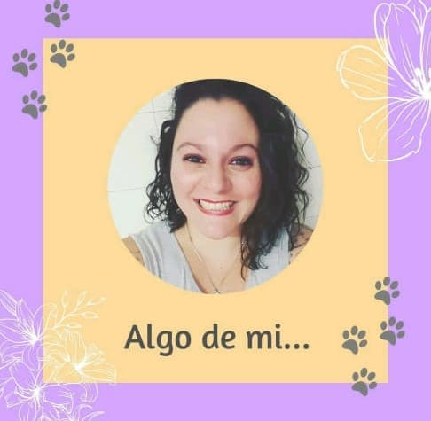

Me llamo Melisa Santoianni, hace unos pocos años atras comence un camino en busca de un cambio, todo empezo cuando deje la Gran ciudad y me vino a vivir a Balcarce con mi marido y mis dos hijos. Con el correr del tiempo me fui acomodando e interesando por cosas que nunca pense iba a ser asi.
En un proceso hermoso de instrospeccion, de busqueda y de contacto fluido con la naturaleza es que me acerque a las Flores de Bach, la experiencia fue tan buena que empece a estudiar y me forme como Terapista Floral
Actualmente estoy trabajando con mascotas, si, las flores pueden ser utilizadas por seres humanos de todas las edades, plantas y mascotas
Las flores ayudan a equilibrar las emociones y en este caso el comportamiento de los animales, son sumamente efectivas y no tienen contraindicaciones, Los invito a descubrir de que manera las Flores de Bach pueden cambiar la vida de nuestras mascotas, por ende la de nuestra Familia